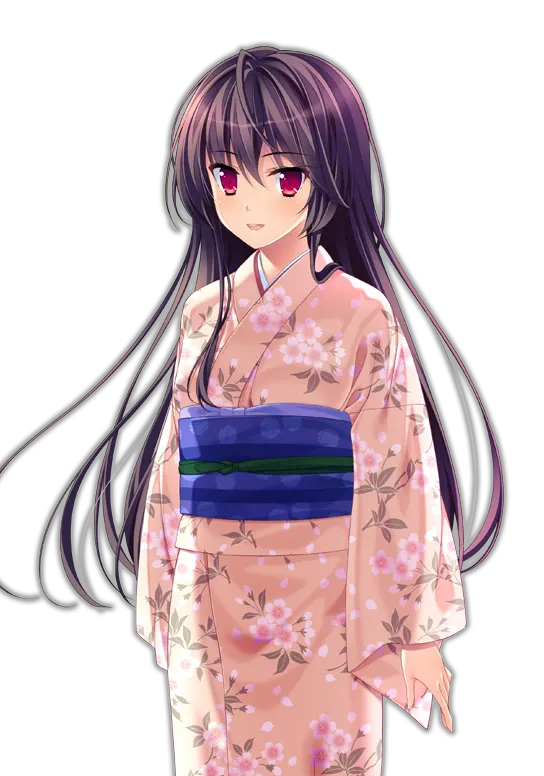

櫻之杜†凈夢者（二）：鐵道分岔的另一頭，是有你存在的世界
作者：桐遠暮羽
從殺人魔手中倖存的秋津圓香和青梅竹馬的慎司揭開了可怕的謎團，給身處另一個世界中深陷夢魘的櫻之杜†凈夢者小隊帶來了希望。

溫馨提示：本文介紹的是懸疑遊戲系列『櫻之杜†凈夢者』的續集，是評測的第二部分。如果您第一次聽說本系列遊戲，建議先閱讀本文的第一部分「櫻之杜†凈夢者（一）：遇害的青梅竹馬，夢魘的開始」。
| 資訊一覽 | |
|---|---|
| 開發商 | MOONSTONE（月石社） |
| 編劇 | 吳（人稱月石社腦洞編劇老吳） |
| 遊戲時長 | 20 小時 |
| 難度 | 低（沒有複雜的選項和路線圖） |
| 分級 | R-18（性行爲描寫，恐怖） |
故事 - 上接櫻之杜†凈夢者（一）
表白的那一天，慎司確信能和圓香永遠在一起，直到第二天圓香搬去了東京。
雖然說兩人遠隔異地，但這實在算不上太壞，和遭遇殺人魔比起來的話。
三年後，耐不住寂寞的圓香回到櫻之社，想要和慎司一起讀高中。
來到車站迎接的慎司發現，自己的女朋友還是這麼的美麗開朗，
兩人進了同一個班，沒有惡魔，也沒有自稱屬於櫻之杜†凈夢者的神必女生。
兩人似乎即將共度一段甜蜜時光。
如果櫻之社幾年前發生的那些事件已經結束了的話。
流逝的時間就像一輛一路向前的火車，軌道分岔的地方，可能就通往擁有你或失去你截然不同的兩個世界。我卻只能坐在一頭，看着坐在另外一頭的你漸行漸遠。

打倒了殺害圓香的殺人狂魔，回歸和平日常的慎司，再一次撥通了已故青梅竹馬的電話。
嘟——您撥打的電話是空號…
尚未從悲傷中解脫出來的慎司，卻不能再消沉下去了。
因爲和平安寧，風景優美的海邊小鎮，櫻之社，並沒有恢復以往的日常..
新的惡夢再次籠罩櫻之社，潛伏在其中的，有惡靈，有怪物，甚至還有殺人狂魔。
在惡夢中死去的人，在現實中也會死去。能夠守護小鎮的最後希望，就只有我們。
這場惡夢的盡頭，會不會通往有你存在的世界呢。

一句話點評
續集的劇情依然繼承了劇本家老吳的巨大腦洞，
構造的懸疑設定依然是層層展開令人上癮。
本作中利用令人顫抖的 BGM 和陰森的作畫
對惡夢的恐怖氛圍進行了徹底的渲染，
使得晚上獨自一人戴上耳機遊玩該遊戲成爲絕妙的享受
（好幾次嚇到直接登出桌面俺會亂說？）。
本作還加入了一些穿越元素，令邏輯更加錯綜複製，
最後的無漏洞完美解答也是讓人醍醐灌頂。
此外，本作中青梅竹馬圓香成爲了可攻略角色，
而圓香故事線在瘋狂膩歪做愛和哈人恐怖探險中的
反覆橫跳令玩家徹底破防，這正是對「
一成不變的甜蜜發糖就是死水一潭」的真實證明。
綜上所述，櫻之杜†凈夢者 2 是一個具備不亞於
前作精彩程度的完整作品（而不是什麼恰爛錢的 DLC！），
是能當之無愧作爲前作續集的絕美故事。
解謎完成後，將是和各大女主的瘋狂做愛時間。
遊戲 OP 動畫欣賞
請欣賞世界名曲：主題歌『繋がらない世界』
作詞：華憐
作編曲：電気
歌：電気式華憐音楽集団
動畫來自 Steam。
還有，本作的 ED さくら雫 也是世界名曲，我是真喜歡電氣華憐的歌。
登場人物
和前作一致，因此就移到下面來了。這裏放上另一套不同的服裝。
吹上慎司

男主角，能看到惡靈和幽靈，
投身櫻之杜†凈夢者事業，爲了小鎮而奔走。
格言：這個小鎮就由我來守護！
- 並沒有很想開後宮。
秋津圓香
慎司的青梅竹馬兼女友，
時隔三年回到慎司身邊，感覺更有女人味了。
她自己這麼覺得，，，
格言：要永遠在一起喔
- 穿上衣服感覺像是平胸。
桐遠暮羽
櫻之杜†凈夢者頭目，擁有斬殺異形的能力，
戰鬥少女，平時喜歡穿和服
格言：和你在一起我就能夠一直幹下去- 那當然指的是櫻之杜†凈夢者的大家。
閑宮真幌
學姐，
櫻之杜†凈夢者成員，不善打架。
但是身懷特別好用的技能。
格言：這次的戰鬥會很哈人喔衿坂美冬
畫家，桐遠暮羽的好朋友，
櫻之杜†凈夢者成員。
格言：我幹，我幹還不行嗎神筆馬良吹上初音
慎司的妹妹
加入了櫻之杜†凈夢者
格言：這下我也要來發揮發揮了- 不是實妹。
遊戲畫面（含有 R-18 畫面）


還在猶豫是否下載？
這裏有一個來自 Hikari Field 棺方中文版 的試玩錄像。
資源與下載
Steam 商店爲官方中文版，也有免費試玩版。
R-18 補丁官網下載連結如下：
http://appendingpulse.jp/dl/sakura_no_mori_2_patch/
本站暫無漢化補丁資源，日文原版資源如下（無需破解）：
1
magnet:?xt=urn:btih:b6566c8bebd2b555893915b1d115b1b7cce611c0文件名：[170728] [MOONSTONE] サクラノモリ†ドリーマーズ2 + Sofmap + Drama CD + Manual
对于原创内容，文章作者保留所有权利。转载需要许可，如有需要请前往 🔗️Galgame 频道 留言。
另外，复制链接自由，请随意分享。
- 不是實妹。
目录
- 那當然指的是櫻之杜†凈夢者的大家。